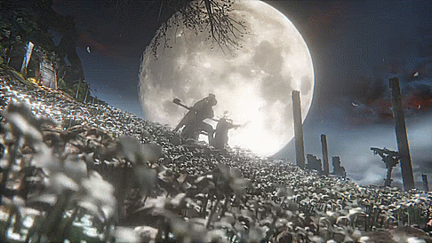

Gehrman, the First Hunter

Description
Gehrman, though an iconic figure in the world of hunters, has hidden
obsessions towards a specific person. This has led him to form a contract
with a Great One and thus, the Hunter's Dream came to life. An inescapable
place to the host of it, which is currently none other than Gehrman himself.
Tips
- Most of his attacks are parriable, when timed properly.
- Avoid his charged bullet (blue aura) as it will stagger you and set you up for a critical.
- Regular attacks can stagger him and stop his attack pattern.